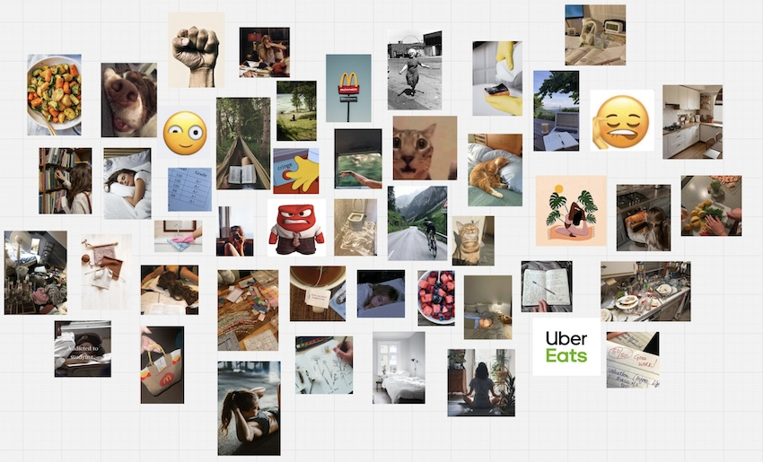
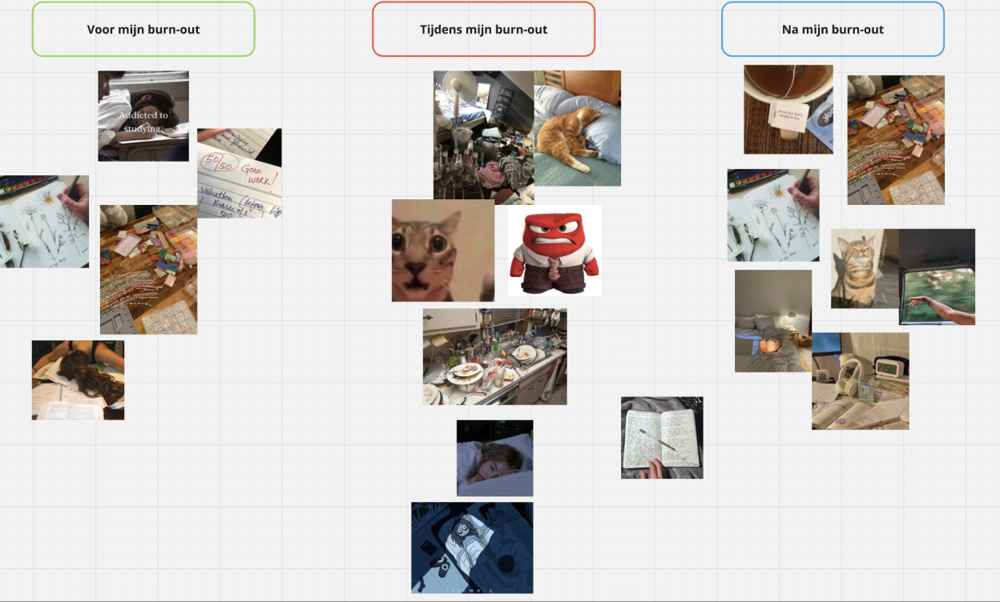

ONDERZOEK - PHOTO ELICITATION - METHODE
Bron: Foto’s verzameld via Pinterest. Link naar Pinterest bord: https://pin.it/4njV9NIOj

Ik heb gekozen voor de onderzoeksmethode Photo Elicitation om met studenten met een burn-out in gesprek te gaan. Uit mijn enquête bleek dat veel mensen het lastig vonden om over hun burn-out te praten, of om de juiste woorden te vinden voor wat ze voelden. Daarom dacht ik dat deze methode goed zou kunnen werken omdat je aan de hand van foto associatie een gesprek aan gaat.
Ik heb geprobeerd om zo veel mogeliijk foto’s te verzamelen die verschillende emoties en situaties afbeelden. Vervolgens heb ik aan mensen gevraagd om een foto(s) bij de volgende categorieën te zetten:
Voor mijn burn-out
Tijdens mijn burn-out
Na mijn burn-out
Aan de hand hiervan ben ik het gesprek aan gegaan om te bespreken hoe hun burn-out er voor hun uit zag.
ONDERZOEK - PHOTO ELICITATION - RESULTATEN

Ik heb met 5 mensen een gesprek gehad aan de hand van de photo elicitation methode. Links is te zien welke foto’s zij hebben uitgekozen en bij welke categorie ze zijn geplaatst. Bij elke foto heb ik de volgende vragen gesteld:
Waar staat deze foto voor jou voor?
Wat gebeurt er op deze foto wat je herkent?
Hoe voelde je je hierbij?
Zo kreeg ik een goed beeld bij wat er echt speelde en waar precies tegenaan gelopen werd. Ik vat hiernaast kort samen wat ik te horen heb gekregen.
Voor mijn burn-out
Tijdens mijn burn-out
Na mijn burn-out
Veel studeren
Heel perfectionisch
Druk voelen om goede cijfers te halen
Cijfers lager dan 8 zijn slecht
Ik nam te weinig tijd voor hobby’s
Te laat doorgaan met studeren
Als het redelijk goed ging, maakte ik tijd vrij voor hobby’s
Journalen ben ik ook na mijn burn-out blijven doen, het geeft me veel grip op mezelf en mijn gevoelens. Ik merk daardoor ook sneller als het wat minder goed gaat met me
Ik merkte na mijn burn-out weer hoe fijn het leven eigenlijk is, ik genoot weer van kleine details. Een YouTuber die ik volg heeft het altijd over ‘casual magic’ en dat ben ik ook echt gaan waarderen. De kleine dingen maken je leven mooi
Ik ben gaan zorgen voor meer balans tussen studie en privé. Ik wil nu ook meer tijd vrijmaken voor leuke dingen en mijn hobby’s want ik weet nu dat het toch geen zin heeft om alleen maar door te gaan, dat heeft geen positeive gevolgen voor mezelf.
Ik heb nog steeds wel momenten waar ik me weer even net zo voelde als midden in mijn burn-out, maar ik voel me toch wel echt totaal anders dan toen, dus daarom durf ik nu wel te zeggen dat mijn burn-out verleden tijd is. Het voelt alsof ik weer grip heb op mijn leven.
Absurd moe en ik moest overdag veel dutjes doen
Boosheid omdat ik het niet eerlijk vond dat ik hiermee zat en mijn omgeving door zag gaan met hun leven. Het zou volgens iedereen de beste tijd van mijn leven moeten zijn, maar dit voelde niet zo voor mij
Mijn kamer was ten alle tijden echt een enorme rotzooi, ik had geen mentale kracht om op te ruimen of schoon te maken
Studie liet ik volledig langs mij liggen want er alleen al aan denken maakte me angstig. Hier was ik tegelijkertijd ook weer heel boos over tegenover mezelf
Ik ben tijdens mijn burn-out begonnen met journalen om te proberen te begrijpen hoe ik me voelde, want dit begreep ik soms zelf ook niet
Aanpak